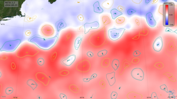

El océano está en un constante movimiento, y dentro de él se forman patrones que se
conocen como corrientes. En ocasiones, debido a la presencia de estructuras submarinas, costeras
y la convergencia de corrientes opuestas, se generan movimientos circulares. Estos fenómenos
se denominan "eddies" o remolinos.
Estos patrones se forman por todo el océano y en diferentes escalas, desde pequeños
remolinos de apenas unos metros de diámetro hasta enormes estructuras que pueden abarcar cientos
de kilómetros. Los remolinos desempeñan un papel importante en la dinámica oceánica, ya que contribuyen
a la mezcla de nutrientes, calor y salinidad en el agua. Además, tienen un impacto significativo en los
ecosistemas marinos, influyendo en la distribución de organismos como el plancton, peces y otras especies.
La formación y la duración de los remolinos pueden variar dependiendo de factores como la temperatura del agua,
las corrientes principales y la topografía submarina. Algunos remolinos pueden persistir durante días, mientras
que otros pueden durar meses, moviéndose a través del océano mientras transportan materiales y energía. Y
como otros fenómenos meteorológicos u oceanográficos, estos pueden clasificarse en diferentes categorías a partir
de su duración espacio-temporal.
Existen diferentes convenciones para la categorización de escalas, pudiendo encontrarse distintos rangos para la misma
denominación de escala según la fuente. En este caso, al trabajar con eddies, se clasificará como se indica a continuación:
Microescala
Los movimientos de microescala son aquellos que ocurren en una escala espacial de menos de un kilómetro y en periodos temporales de corta duración,
llegando a pocos días.
Mesoescala
Los movimientos en esta escala se producen en áreas más
grandes, tienen una influencia en un espacio de 1 a 100 kilómetros y ocurren en
periodos que van de varios días a meses. Eventos pertenecientes a esta escala
de movimiento son brisas de mar-tierra, tormentas, tornados
Macroescala
Abarcan la escala global, es una escala espacial de más de 100
kilómetros, van desde meses a años, incluso puede haber algunas semanas sin
presentar cambios. En esta escala podemos encontrar los vientos alisios, vientos
del oeste.
¿Por qué son relevantes los eddies de mesoescala?
Los eddies de mesoescala son actores principales en el transporte de calor, sal,
carbono y otras sustancias por el océano, así como en la mezcla de aguas superficiales con aguas
más profundas. La circulación vertical asociada con los eddies de mesoescala es de gran importancia,
ya que puede explicar la distribución heterogénea de clorofila en las capas superficiales del océano.
Además,estos eddies suministran nutrientes a zonas costeras y superficiales, permitiendo la floración de plancton,
lo que contribuye a la cadena trófica. También, más de la mitad de la energía cinética del océano se encuentra
en el rango de los eddies de mesoescala, siendo el resto de la energía en escalas mayores.
En resumen, los eddies de mesoescala juegan un papel crucial en la modulación de la circulación oceánica y en los flujos
de calor y nutrientes, teniendo una gran importancia para los ecosistemas marinos. Por lo tanto, su estudio y análisis son de gran interés.
En meteorología, los términos ciclónicos y anticiclónicos se utilizan para describir
dos tipos de sistemas de presión que tienen características opuestas en cuanto a la
presión atmosférica y el sentido de giro (esta depende del hemisferio).
Relación con la presión atmosférica
Sentido de Giro
SLA y SSH
Los satélites de altimetría proporcionan datos desde 1993 a escala global, y se combinan
en mapas diarios 2D de la altura de la superficie del mar (SSH) con una resolución de 0.25° x 0.25°.
Debido a que los eddies están relacionados con los extremos de SSH a partir de ellos se pueden identificar
los centros de los eddies.
Ciclónicos : relacionados con mínimos de SSH.
Anticiclónicos: relacionados con máximos de SSH.
¿Como se definen SLA y SSH?
Para ello primero es necesario definir algunos conceptos
Geoide
Forma que tomaría la superficie del océano si estuviera únicamente bajo la
influencia de la gravedad de la Tierra. Destacar que, en la práctica,
otras fuerzas también contribuyen a las variaciones dinámicas de la
superficie del mar (por ejemplo, los vientos y las mareas).
Elipsoide de referencia
El elipsoide de referencia es una superficie que aproxima al geoide y se utiliza para
definir el sistema de posicionamiento en la Tierra. Este sistema también se llama sistema
geodésico y se utiliza como origen para la altitud de los altímetros.
El elipsoide de referencia que se usaba históricamente en el procesamiento de altímetros del
sistema Data Unification and Altimeter Combination System (DUACS) era el Topex/Poseidon.
Desde 2021, el elipsoide WGS84, que también es el de referencia para el GPS, ha reemplazado
a este elipsoide histórico.
NEMO (Nucleus for European Modelling of the Ocean)
Marco de modelado para actividades de investigación y servicios de
pronóstico en las ciencias del océano y el clima, desarrollado por un
consorcio europeo.
Los modelos oceánicos Copernicus Marine, basados en el código numérico NEMO (Madec et al. 2022),
aproximan la superficie geopotencial (geoide) a una esfera (White et al., 2005, sección 2).
Esquema representativo de las diferentes variables
SSH (Altura de la superficie del mar)
Diferencia de altura entre el elipsoide de referencia y la superficie del mar.
Sin embargo, la medición de los altímetros técnicamente mide el alcance (Altimetric range)
del altímetro, es decir, la distancia entre la superficie del mar y el satélite.
Conociendo la altitud del satélite, esta medida permite obtener el SSH:
En Copernicus Marine, se hace la distinción entre: SSH_model: la altura de la superficie del mar sobre el geoide. SSH_altimeter: la altura de la superficie del mar sobre el elipsoide de referencia.
ADT (Topografía Dinámica Absoluta)
Los métodos numéricos como NEMO producen variable de altura del mar sobre el
geoide SSH_model . Esta variable también se denomina como ADT.
MSS (Media del nivel de la superficie del mar)
La diferencia entre SLA y SSH es la Superficie Media del Mar (MSS). La MSS proporciona el estado
promedio a lo largo del tiempo de la superficie del mar.
SLA (Anomalía del nivel del Mar)
La Anomalía del Nivel del Mar (SLA) es la parte variable de la altura de la superficie del mar (SSH) alrededor de
su estado medio (MSS). Su valor, por lo tanto, depende del período de referencia utilizado para calcular la MSS. Además,
la SLA es también la diferencia entre la Topografía Dinámica Absoluta (ADT) y la Topografía Dinámica Media (MDT).
MDT (Topografía Dinámica Media)
La MDT es similar a la MSS, pero se encuentra sobre el geoide y no sobre el elipsoide. Los productos de altímetro L3/L4
permiten acceder tanto a la SLA como al ADT o MDT.
La MSS y la MDT son representativas de un período temporal específico, también denominado el "período de referencia".
Los productos de altímetro DUACS están referenciados usando el período de referencia [1993, 2012].
Además, también se utiliza una convención de sesgo de referencia para la SLA. Esta convención consiste en tener una SLA
media nula sobre el océano global en el año 1993. Esta convención explica por qué la SLA media global durante el período
de referencia no es igual a 0. El valor obtenido es característico del aumento del nivel medio global del mar durante
este período, y se encuentra cerca de los 2.7 cm.
El geoide utilizado en el procesamiento DUACS está definido por el campo MDT. Por lo tanto, el geoide es susceptible de
cambiar según la versión de MDT utilizada.
Métodos de Identificación
A la hora de identificar y rastrear las trayectorias de los eddies en el océano, se utilizan
principalmente métodos Lagrangianos o Eulerianos. Sin embargo, existen alternativas como métodos
con diferentes aproximaciones. Aunque estos enfoques alternativos también han ganado relevancia,
nos centraremos en los dos más utilizados. En cualquier caso, mayoritariamente los métodos utilizan la información de altimetría proporcionada por
los satélites, estando explicada la información que proporcionan en la sección
SLA y SSH.
Métodos Lagrangianos
Estos métodos se centran en el análisis de las partículas a través de su desplazamiento espacio-temporal, siguiendo su trayectoria
a medida que se mueven con las corrientes oceánicas. Permiten estudiar el transporte de calor, nutrientes y otros elementos en el océano,
proporcionando una visión detallada de las trayectorias. Suelen utilizar los datos obtenidos de satélites y la recopilada por drifters.
Métodos Eulerianos
Estos métodos se centran en el análisis del flujo oceánico desde un marco de referencia fijo, observando cómo las propiedades del agua,
como la velocidad, temperatura y salinidad, cambian en un punto determinado del espacio a lo largo del tiempo. A diferencia de los métodos Lagrangianos,
que siguen el movimiento de partículas individuales, los métodos Eulerianos permiten estudiar la evolución de estructuras como los eddies mediante datos obtenidos de satélites y boyas ancladas.
Permiten estudiar y monitorear la variabilidad de las propiedades del océano en un punto especifico.
META3.2 DT
Mesoscale
Eddy Trajectory Atlas Product META3.2 DT
producto que proporciona información sobre la trayectoria y características de los eddies de mesoescala en el océano. META3.2 DT, se
basa en un enfoque Euleriano, ya que la detección de eddies se realiza mediante el análisis de campos de altura de la superficie del mar
clasificando en cada paso de tiempo los eddies presentes. Luego a partir de un proceso se relacionan eddies en diferentes momentos, obteniéndose
asi la evolución de un Eddie a lo largo del tiempo.
Los datos utilizados en este trabajo serán los proporcionados por Meta3.2DT, específicamente el producto "Two Satellites", el cual hace uso de los datos
proporcionados por dos satélites activos simultáneamente durante todo el período de estudio, en lugar de utilizar múltiples satélites activos. Aunque el uso
de múltiples satélites facilita una mayor detección de eddies, al optar por utilizar el rango histórico completo de datos con dos satélites, minimizamos posibles
discrepancias derivadas de la variabilidad en el número de satélites y la ruptura del muestreo espaciotemporal homogéneo asociado con el uso de solo dos satélites.

Instantánea de los eddies de META3.2 del 25/08/2004 superpuesta en la Topografía Dinámica
Absoluta (ADT) del Servicio Marítimo Copernicus. Créditos: E.U. Copernicus Marine Service/CNES/CLS.
META3.2 DT
Este es un párrafo de conclusión donde puedes resumir los puntos principales.
Variables
Variables incluidas en los archivos de "Mesoscale Eddy Trajectory Atlas Product META3.2 DT" .
Variable y Descripción
Amplitud (m)
Diferencia de altura entre el extremo (máximo o mínimo dependiendo de si es ciclónico(HN) o anticiclónico (HN))
de SSH dentro del eddy y SSH en el contorno efectivo definido.
Cost_association
Coste de asociación de un eddy con la siguiente observación.
Effective Area (m²)
Area cerrada por el contorno efectivo(effective_contour)
Effective contour height (m)
Altura SSH filtrada del effective contour.
Effective contour latitude (grados norte) / longitude (grados este)
Latitudes y longitudes del contorno efectivo.
Effective contour shape error (%)
Error entre el contorno efectivo y su mejor círculo ajustado.
Effective radius (m)
Radio del mejor círculo ajustado correspondiente al effective contour.
Inner_contour_height (m)
SSH filtrado para el contorno detectado más pequeño.
Latitude (grados norte) /longitude (grados este), latitude_max/longitud_max
Latitude, longitud del centro del mejor círculo ajustado.
_max : Latitud y longitud del contorno interior.
Total de contornos
Total de contornos seleccionados para este eddy.
num_point_e / num_point_s
Número de puntos considerados para el contorno efectivo / de velocidad antes del remuestreo.
Observation flag
Flag indicando si el valor es interpolado entre dos observaciones (0: observed eddy, 1: interpolated eddy)'
Observation number
Dias desde la primera detección, considerando primera detección como 0
Speed area (m²)
Area encerrada por el contorno de velocidad.
Speed average (m/s)
Media de la velocidad del contorno que define la escala de radio (speed_radius)
Speed contour height (m)
SSH filtrado para el contorno de velocidad.
Speed contour latitude/longitude
Latitudes y longitudes del contorno de velocidad.
Speed contour shape error (%)
Error entre el contorno de velocidad y su mejor círculo ajustado.
Speed radius (m)
RadiO del mejor círculo ajustado correspondiente al contorno de velocidad circumaverage máxima.
Time
Dia de esta observación desde 1950-01-01 00:00:00
Track
Número de identificación de la trayectoria.
Uavg profile (m/s)
Valores de velocidad promediados desde el contorno efectivo hacia adentro hasta el contorno más pequeño, con puntos espaciados uniformemente.
Variables Propias
Variables calculadas a partir de los datos incluidos en los archivos de "Mesoscale Eddy Trajectory Atlas Product META3.2 DT" .
Variable
Descripción
Lifetime
Tiempo de vida en cada valor de time para cada Eddie identificado con un track
Lifetime Max
Tiempo de vida máximo para cada Eddie identificado con un track
Celda
Celda donde nace el Eddie, siendo las celdas subdivision del mediterráneo propia
Región
Región donde nace el Eddie, siendo las regiones: Cuenca Oeste, Este y mar Adriático